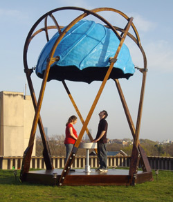
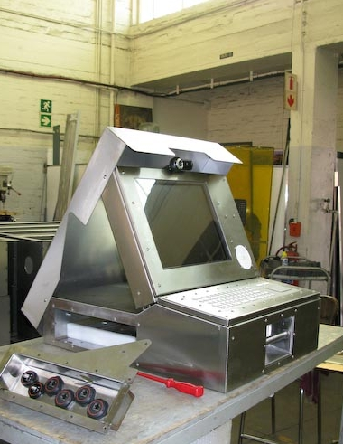
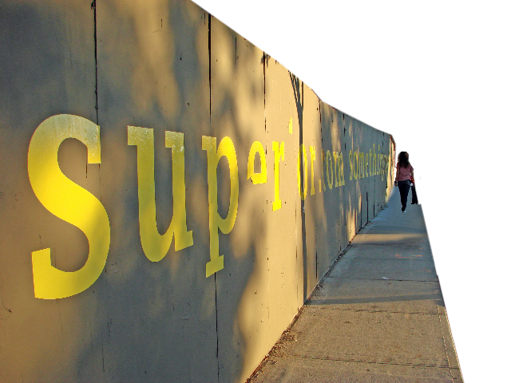

people doing strange things with electricity
The 1261047th dorkbot-nyc meeting took place at 7pm on Wednesday, October 1st, 2008 at Location One in SoHo.
The meeting was free and open to the public. People brought snacks to share.
It featured the volatile and isotopic:
Douglas's pics

Mark McNamara: Large Interactive Musical Toys
I have been very lucky during the first half of this year to be involved in creating two large-scale musical toys that invited and relied upon public interaction. The HAN project asked TUFTS students to acoustically map their environment. We then created an interactive toy to access that database of recordings. David Byrne's Playing the Building turned a landmarked building in lower Manhattan into a large musical instrument that he then invited the public to play.
http://www.landonmark.net
Seth Herr & Merrick Schaefer: The Africanized Bee
The 'Bee' is a mobile communication system developed by the Division of Communication at UNICEF that allows for communication, connectivity and data access in field conditions where such technologies are often difficult or impossible to use. Included in the first prototypes are webcams, radio transmitters and ultra-low-power computers. These components are run with open-source software designed to support the efforts of field workers and partners, and to be locally adapted for ongoing use. At dorkbot, we'll explain the design and technical development of the Bee, as well as future use-cases and implementations. We'll also bring along our latest prototype.
http://www.mepemepe.com/wiki/The_Bee
Ayah Bdeir: Looking for something super
New York based artist, interaction designer and Eyebeam fellow Ayah Bdeir will be talking about some of her experiments in putting technology where it doesn't typically belong (or does but doesn't typically exist) - from kitschy underwear to design furniture to electro-phobic art supply stores.
http://www.ayahbdeir.com/
Next meeting: 05 Nov 2008